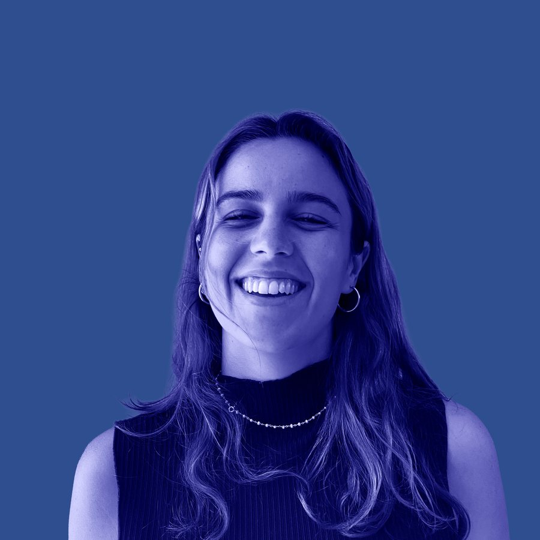

portefólio
(arquitecta *)
- arquitectura
- comunicação
- design gráfico
- fotografia e vídeo
* estágio à ordem dos arquitectos (em curso)

(Projetos selecionados)
rebranding de uma marca de hotel Reabilita (2025–) Lisboa
identidade, reestruturação do website e campanhas
à margem do Rio tese de mestrado (2025) Porto
arquitectura como dispositivo de combate à segregação socioespacial
fotografia e vídeo de arquitectura Reabilita (2025–) Lisboa
registo de obra e de projeto final
identidade gráfica faupfest (2024) Porto
[o que inclui: cartaz, redes, sinalética]
(Índice)
12 projetos- rebranding de uma marca de hotel Reabilita (2025–) Lisboa
comunicação / identidade, reestruturação do website e campanhas - conteúdos para redes sociais Reabilita (2025–) Lisboa
comunicação / planeamento, gestão e produção - brochuras, newsletters e plantas comerciais Reabilita (2025–) Lisboa
design gráfico / materiais de produto e de venda - fotografia e vídeo de arquitectura Reabilita (2025–) Lisboa
fotografia e vídeo / registo de obra e de projeto final - imagens 3D com recurso a IA Reabilita (2025–) Lisboa
arquitectura / visualização de projeto - estudo prévio, projeto multiusos Reabilita (2025–) Lisboa
arquitectura / [descrição curta do programa] - à margem do Rio tese de mestrado (2025) Porto
arquitectura / arquitectura como dispositivo de combate à segregação socioespacial - maquetes e ArtRio 2023 Atelier Évora (2023) Rio de Janeiro
arquitectura / estudos prévios, maquetes finais e exposição - identidade gráfica faupfest (2024) Porto
design gráfico / [o que inclui: cartaz, redes, sinalética] - merch faup (2024) Porto
design gráfico / [peças desenhadas] - concurso Pladur (2021) Porto
arquitectura / vencedor da categoria BIM faup - madeby.martsa (2022–25)
artes manuais / projeto pessoal de cerâmica e crochet
(Sobre)
Sou arquitecta, formada pela faup, com passagem pela fau ufrj, no Rio de Janeiro.
Desde outubro de 2025 trabalho na Reabilita, em Lisboa, entre o projeto de arquitectura e a comunicação: identidade, website, redes sociais, fotografia e vídeo.
[uma ou duas frases sobre como trabalhas e o que procuras]
(Experiência)
Reabilita (desde out 2025) Lisboa
arquitecta; criativa de marketing e comunicação
Atelier Évora (2023) Rio de Janeiro
arquitecta e maquetista
(Educação)
* estágio à ordem dos arquitectos (em curso)
formação archiCAD e BIM (2026) Lisboa
faup, mestrado (2018–25) Porto
fau ufrj (2022–23) Rio de Janeiro
(Ferramentas)
autoCAD
archiCAD
illustrator
photoshop
inDesign
lightroom
capcut
veras
gpt +claude +grok
(Línguas)
Português (nativo)
Inglês (fluente)
(Interesses)
arquitectura
design gráfico
comunicação
fotografia
cinema e vídeo
artes manuais
viagens
(Contacto)
[instagram] / [linkedin]